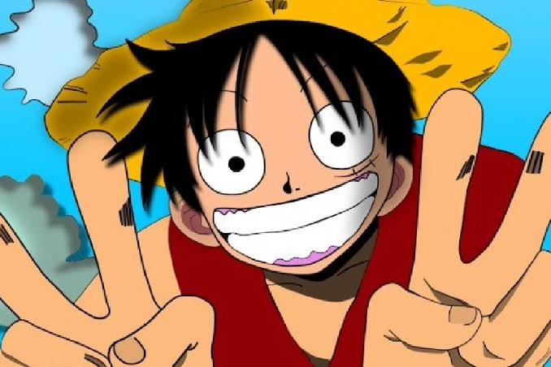
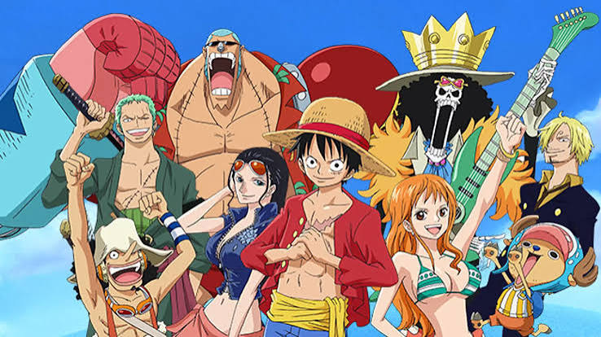

01
Los primeros mares
Luffy comienza a reunir a sus compañeros y emprende su viaje por los mares.
Una aventura de piratas, sueños, amistad, libertad y misterios que comenzó con el sueño de un joven llamado Monkey D. Luffy.
⚓ Comenzar historia
La historia comienza con Monkey D. Luffy, un joven que tiene un sueño muy grande: convertirse en el Rey de los Piratas.
Inspirado por el pirata Shanks, Luffy decide salir al mar para encontrar el legendario tesoro conocido como One Piece.
Así comienza su viaje y la búsqueda de personas que quieran formar parte de su tripulación.
Luffy comienza a reunir a sus compañeros y emprende su viaje por los mares.
La tripulación encuentra piratas, marines y diferentes enemigos durante su recorrido.
El viaje se vuelve mucho más peligroso cuando los Sombrero de Paja entran en Grand Line.
La tripulación descubre nuevos lugares, culturas, poderes y secretos del mundo.
El camino hacia el One Piece no es sencillo.

A lo largo de su viaje, Luffy y su tripulación enfrentan situaciones que ponen a prueba su amistad y determinación.
Cada isla representa una nueva aventura y también permite conocer una parte diferente del enorme mundo de One Piece.
Los personajes también descubren que sus propios sueños están relacionados con el camino que están recorriendo.
La búsqueda del One Piece lleva a Luffy y a su tripulación cada vez más cerca de los grandes misterios del mundo.
Mientras avanzan, aparecen nuevos desafíos y se revelan secretos que estuvieron ocultos durante mucho tiempo.
Nuevos enemigos
Nuevos mares
Nuevos sueños
El gran misterio del One Piece todavía forma parte del viaje de Luffy y su tripulación.
Explorar los arcos →